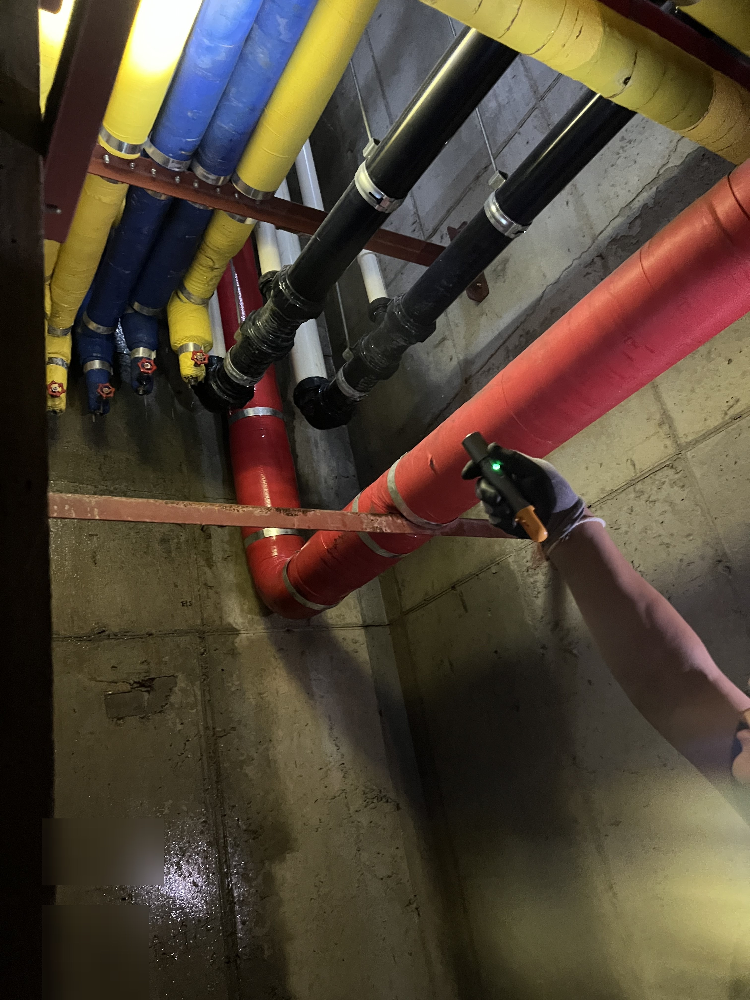
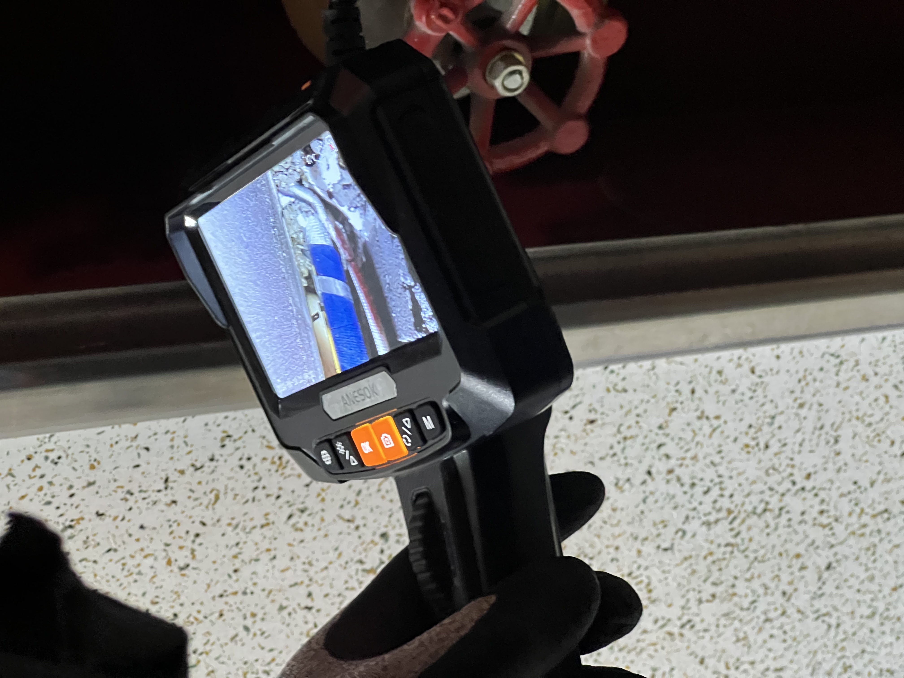
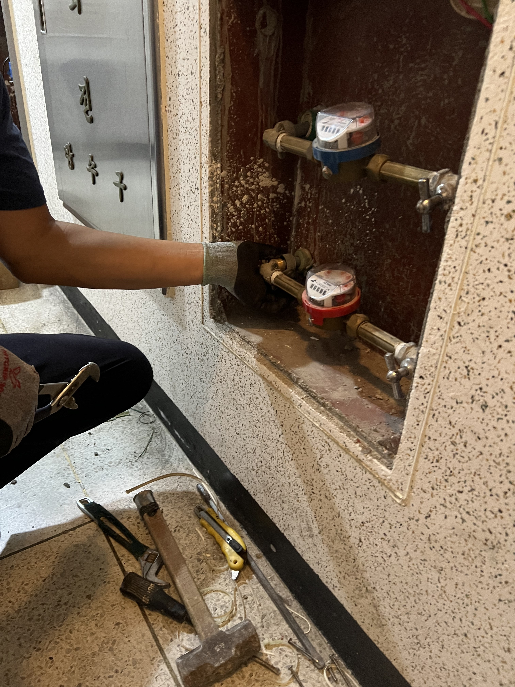
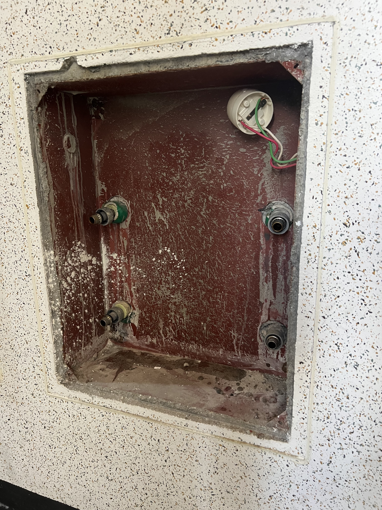
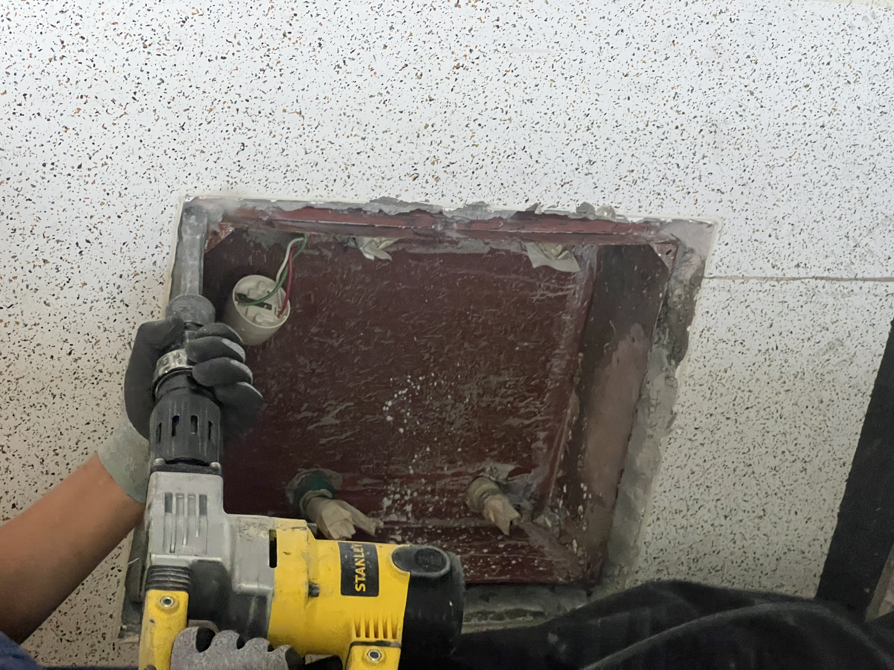
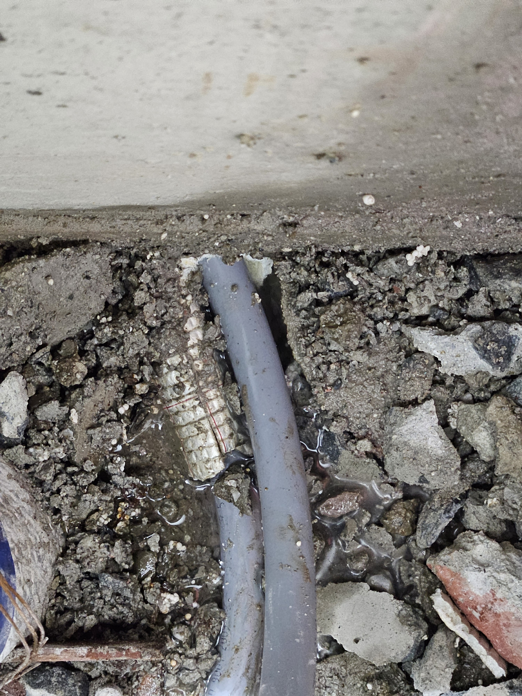
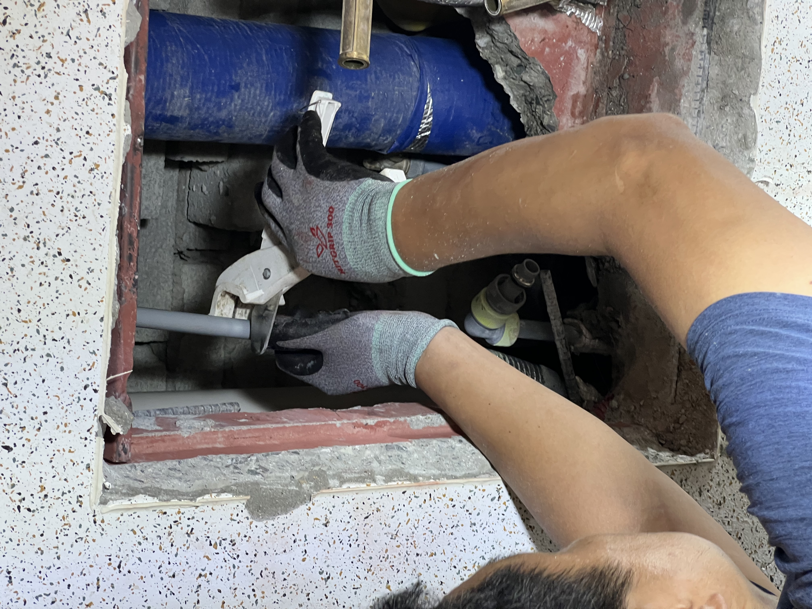
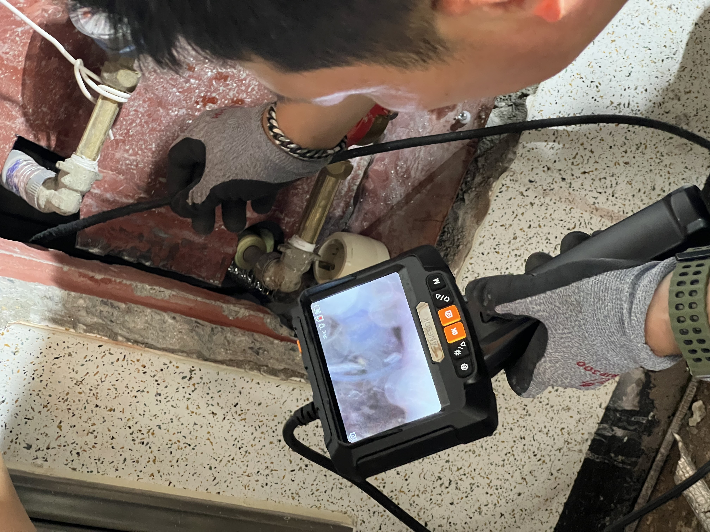
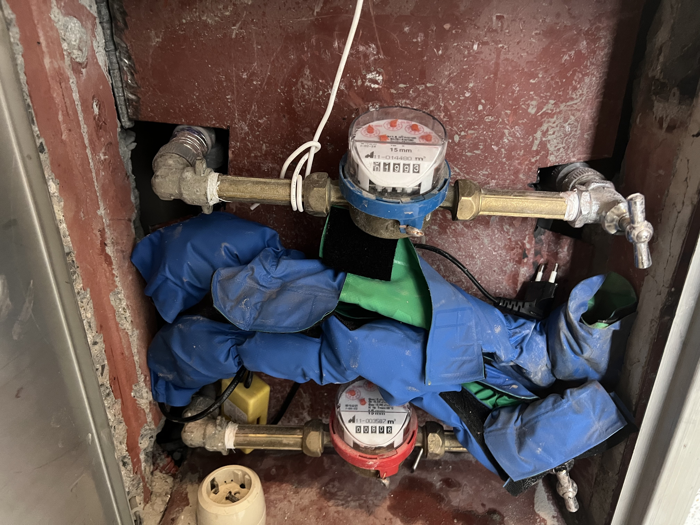

대전 목상동 평화로운아파트 계량기함 뒤 매립 배관에 고인 물, 내시경으로 확인하고 당일 배관 구간을 교체했습니다

현장 작업 한눈에 보기
- 현장
- 대전 목상동 평화로운아파트 세대 계량기함·배관 피트
- 문제
- 배관 피트 바닥 물기와 김
계량기함 뒤 매립 배관 주변에 물 고임 - 작업
- 내시경으로 벽 속 배관 확인
계량기함 둘레 개방 → 새 PB 배관·이음쇠로 교체 - 결과
- 교체 후 내시경 재확인
계량기 2대 재설치와 보온 (09:37~15:41 당일)
통수 확인·마감 복구는 이 글 범위 밖
대전 목상동 평화로운아파트 배관 피트에 물기와 김이 차 있었습니다. 세대 계량기함을 열어 내시경으로 벽 속 배관을 살피고, 함 둘레를 개방해 물이 고여 있던 매립 배관 구간을 교체하고 계량기를 다시 달기까지, 하루 작업을 사진과 현장 동영상 3편으로 정리했습니다. 벽 마감 복구와 통수 후 상태는 이 글 범위 밖입니다.
배관 피트에서 시작했습니다
안녕하세요. 만물인테리어입니다. 이번 현장은 대전 목상동 평화로운아파트입니다. 9월 9일 아침, 배관 피트 바닥에 물기가 있고 안에 김이 차 있어 어디서 내려오는 물인지부터 확인했습니다.
피트 안에는 보온재를 감은 배관이 여러 줄 지나가서 겉만 봐서는 새는 자리를 고르기 어렵습니다. 그래서 내시경 카메라를 들고 배관 사이를 따라가며 젖은 흔적을 찾았습니다.

내시경 화면에 벽 속 배관이 잡혔습니다
피트 안에는 물을 받으려고 쳐 둔 비닐이 있었는데, 그 비닐을 타고 물이 계속 흘러내리고 있었습니다(동영상). 내시경을 벽 틈으로 넣자 파란 테이프를 감은 배관이 벽 속 홈을 따라 지나가는 모습이 화면에 잡혔습니다. 배관 둘레 콘크리트가 젖어 있어, 피트에 고인 물이 이 벽 속 배관 쪽에서 내려온다고 보고 피트 위쪽 벽에 매립된 세대 계량기함을 열어 보기로 했습니다.

세대 계량기함을 열어 연결부를 확인했습니다
세대 계량기함이 매립된 벽의 함 문을 열면 파란 냉수 계량기와 빨간 온수 계량기가 나란히 있고, 각각 밸브와 연결 배관이 붙어 있습니다. 계량기 아래 연결부를 손으로 하나씩 만져 보며 조임 상태와 물기를 확인했습니다.

계량기를 떼어 내니 함 바닥에 물 자국이 있었습니다
계량기 두 대를 떼어 내고 함 안을 비웠습니다. 배관 끝 두 곳과 바닥에 물이 말라붙은 것으로 보이는 자국이 있어, 새는 자리는 계량기 자체가 아니라 함 아래로 이어지는 매립 배관 쪽이라고 판단했습니다.

함 둘레 벽을 개방했습니다
매립 배관을 꺼내려면 계량기함 둘레 벽을 깨야 합니다. 해머드릴로 함 테두리를 따라 조금씩 파쇄해 벽 속 배관이 지나가는 자리를 열었습니다. 필요한 만큼만 열어 이후 마감 복구 범위를 줄이려고 했습니다.

벽 속 자갈 채움 사이에 물이 고여 있었습니다
벽을 열자 자갈 채움 속을 지나는 회색 배관이 나왔고, 그 둘레 자갈 사이에 물이 고여 있었습니다. 동영상으로도 남겨 둔 장면입니다. 물이 고인 위치와 아침 내시경에서 본 젖은 자리가 겹쳐, 이 구간을 먼저 교체하기로 했습니다.

새 배관과 이음쇠로 바꿨습니다
물이 고여 있던 구간의 배관을 잘라 내고 새 PB 배관을 이음쇠로 연결했습니다. 위쪽에 파란 보온재를 감은 배관이 지나가는 좁은 자리라, 이음쇠를 하나씩 끼우고 손으로 조여 가며 맞췄습니다.

연결한 뒤 내시경으로 다시 봤습니다
배관을 연결하고 나서 내시경을 다시 넣어 이음쇠 주변과 벽 속 배관 둘레를 살폈습니다. 아침에 젖어 있던 자리에 새 물기가 생기는지 화면으로 확인하는 과정입니다.

계량기를 다시 달고 보온재를 감았습니다
계량기 두 대를 제자리에 다시 달고 연결 배관에는 파란 보온재를 감았습니다. 오전 9시 반에 피트에서 시작해 오후 3시 40분쯤 계량기까지 되돌린 하루 작업입니다.
벽 마감 복구와 통수 뒤 상태는 이 글의 사진에 없어서 적지 않았습니다. 계량기함 뒤나 배관 피트에 물기가 보이면, 뜯기 전에 내시경으로 먼저 확인하는 것이 범위를 줄이는 길입니다.
